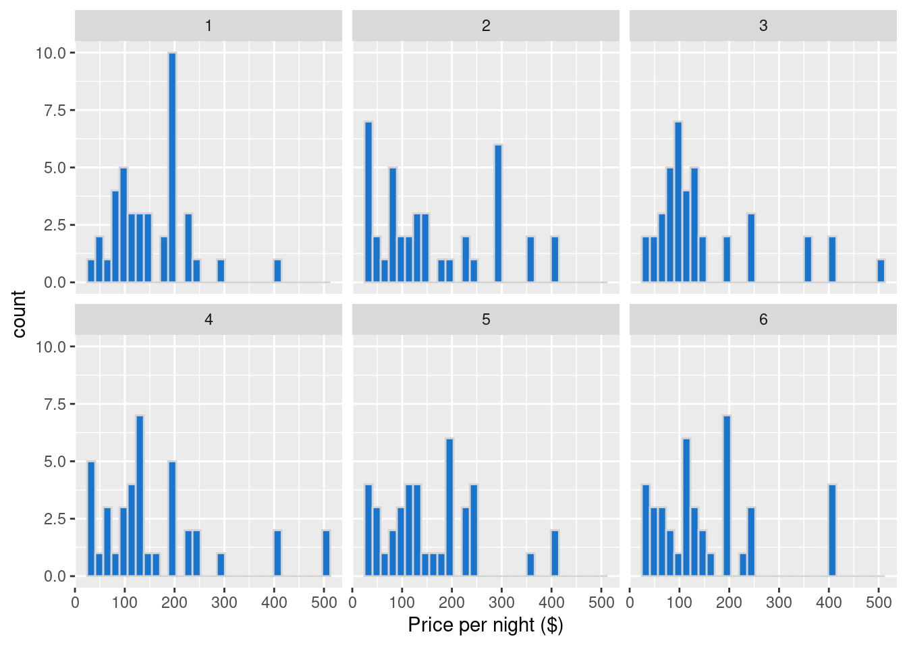

Chapter 11 Introduction to Statistical Inference
11.1 Overview
A typical data analysis task in practice is to draw conclusions about some unknown aspect of a population of interest based on observed data sampled from that population; we typically do not get data on the entire population. Data analysis questions regarding how summaries, patterns, trends, or relationships in a data set extend to the wider population are called inferential questions. This chapter will start with the fundamental ideas of sampling from populations and then introduce two common techniques in statistical inference: point estimation and interval estimation.
11.2 Chapter learning objectives
By the end of the chapter, students will be able to:
- Describe real-world examples of questions that can be answered with the statistical inference.
- Define common population parameters (e.g. mean, proportion, standard deviation) that are often estimated using sampled data, and estimate these from a sample.
- Define the following statistical sampling terms (population, sample, population parameter, point estimate, sampling distribution).
- Explain the difference between a population parameter and sample point estimate.
- Use R to draw random samples from a finite population.
- Use R to create a sampling distribution from a finite population.
- Describe how sample size influences the sampling distribution.
- Define bootstrapping.
- Use R to create a bootstrap distribution to approximate a sampling distribution.
- Contrast the bootstrap and sampling distributions.
11.3 Why do we need sampling?
Statistical inference can help us decide how quantities we observe in a subset of data relate to the same quantities in the broader population. Suppose a retailer is considering selling iPhone accessories, and they want to estimate how big the market might be. Additionally, they want to strategize how they can market their products on North American college and university campuses. This retailer might use statistical inference to answer the question:
What proportion of all undergraduate students in North America own an iPhone?
In the above question, we are interested in making a conclusion about all undergraduate students in North America; this is our population. In general, the population is the complete collection of individuals or cases we are interested in studying. Further, in the above question, we are interested in computing a quantity—the proportion of iPhone owners—based on the entire population. This is our population parameter. In general, a population parameter is a numerical characteristic of the entire population. To compute this number in the example above, we would need to ask every single undergraduate in North America whether or not they own an iPhone. In practice, directly computing population parameters is often time-consuming and costly, and sometimes impossible.
A more practical approach would be to collect measurements for a sample: a subset of individuals collected from the population. We can then compute a sample estimate—a numerical characteristic of the sample—that estimates the population parameter. For example, suppose we randomly selected 100 undergraduate students across North America (the sample) and computed the proportion of those students who own an iPhone (the sample estimate). In that case, we might suspect that that proportion is a reasonable estimate of the proportion of students who own an iPhone in the entire population.

Figure 11.1: Population versus sample
Note that proportions are not the only kind of population parameter we might be interested in. Suppose an undergraduate student studying at the University of British Columbia in Vancouver, British Columbia, is looking for an apartment to rent. They need to create a budget, so they want to know something about studio apartment rental prices in Vancouver, BC. This student might use statistical inference to tackle the question:
What is the average price-per-month of studio apartment rentals in Vancouver, Canada?
The population consists of all studio apartment rentals in Vancouver, and the population parameter is the average price-per-month. Here we used the average as a measure of center to describe the “typical value” of studio apartment rental prices. But even within this one example, we could also be interested in many other population parameters. For instance, we know that not every studio apartment rental in Vancouver will have the same price-per-month. The student might be interested in how much monthly prices vary and want to find a measure of the rentals’ spread (or variability), such as the standard deviation. We might be interested in the fraction of studio apartment rentals that cost more than $1000 per month. And the list of population parameters we might want to calculate goes on. The question we want to answer will help us determine the parameter we want to estimate. If we were somehow able to observe the whole population of studio apartment rental offerings in Vancouver, we could compute each of these numbers exactly; therefore, these are all population parameters. There are many kinds of observations and population parameters that you will run into in practice, but in this chapter, we will focus on two settings:
- Using categorical observations to estimate the proportion of each category
- Using quantitative observations to estimate the average (or mean)
11.4 Sampling distributions
11.4.1 Sampling distributions for proportions
Let’s start with an illustrative (and tasty!) example. Timbits are bite-sized doughnuts sold at Tim Hortons, a popular Canadian-based fast-food restaurant chain founded in Hamilton, Ontario, Canada.

Figure 11.2: A box of Timbits
Suppose we wanted to estimate the true proportion of chocolate doughnuts at Tim
Hortons restaurants. Now, of course, we (the authors!) do not have access to the true population.
So for this chapter, we created a fictitious box of 10,000 Timbits with two flavours—old-fashioned
and chocolate—as our population, and use this to illustrate
inferential concepts. Below we have a tibble() called virtual_box with a Timbit ID and flavour as our columns. We have also loaded our necessary packages: tidyverse and the infer package, which we will need to perform sampling later in the chapter.
library(tidyverse)
library(infer)
virtual_box## # A tibble: 10,000 x 2
## timbit_id flavour
## <dbl> <fct>
## 1 1 chocolate
## 2 2 old fashioned
## 3 3 chocolate
## 4 4 chocolate
## 5 5 chocolate
## 6 6 old fashioned
## 7 7 chocolate
## 8 8 chocolate
## 9 9 old fashioned
## 10 10 old fashioned
## # … with 9,990 more rowsFrom our simulated box, we can see that the proportion of chocolate Timbits is 0.63. This value, 0.63, is the population parameter. Note that this parameter value is usually unknown in real data analysis problems.
virtual_box %>%
group_by(flavour) %>%
summarize(
n = n(),
proportion = n() / 10000
)## # A tibble: 2 x 3
## flavour n proportion
## <fct> <int> <dbl>
## 1 old fashioned 3751 0.375
## 2 chocolate 6249 0.625What would happen if we were to buy a box of 40 randomly-selected Timbits and count the number of chocolate Timbits (i.e., take a random sample of size 40 from our Timbits population)? Let’s use R to simulate this using our virtual_box population. We can do this using the rep_sample_n function from the infer package. The arguments
of rep_sample_n are (1) the data frame (or tibble) to sample from, and (2) the size of the sample to take.
set.seed(1)
samples_1 <- rep_sample_n(tbl = virtual_box, size = 40)
choc_sample_1 <- summarize(samples_1,
n = sum(flavour == "chocolate"),
prop = sum(flavour == "chocolate") / 40
)
choc_sample_1## # A tibble: 1 x 3
## replicate n prop
## <int> <int> <dbl>
## 1 1 24 0.6Here we see that the proportion of chocolate Timbits in this random sample is 0.6. This value is our estimate — our best guess of our population parameter using this sample. Given that it is a single value that we are estimating, we often refer to it as a point estimate.
Now imagine we took another random sample of 40 Timbits from the population. Do you think we would get the same proportion? Let’s try sampling from the population again and see what happens.
set.seed(2)
samples_2 <- rep_sample_n(virtual_box, size = 40)
choc_sample_2 <- summarize(samples_2,
n = sum(flavour == "chocolate"),
prop = sum(flavour == "chocolate") / 40
)
choc_sample_2## # A tibble: 1 x 3
## replicate n prop
## <int> <int> <dbl>
## 1 1 26 0.65Notice that we get a different value for our estimate this time. The proportion of chocolate Timbits in this sample is 0.65. If we were to do this again, another random sample could also give a different result. Estimates vary from sample to sample due to sampling variability.
But just how much should we expect the estimates of our random
samples to vary? In order to understand this, we will simulate taking more samples
of size 40 from our population of Timbits, and calculate the
proportion of chocolate Timbits in each sample. We can then
visualize the distribution of sample proportions we calculate. The distribution
of the estimate for all possible samples of a given size (which we commonly refer to as \(n\)) from a population is
called a sampling distribution. The sampling distribution will help us see
how much we would expect our sample proportions from this population to vary
for samples of size 40. Below we again use the rep_sample_n to take samples
of size 40 from our population of Timbits, but we set the reps argument
to specify the number of samples to take, here 15,000. We will use the function tail() to see the last few rows of our samples data frame.
samples <- rep_sample_n(virtual_box, size = 40, reps = 15000)
samples## # A tibble: 600,000 x 3
## # Groups: replicate [15,000]
## replicate timbit_id flavour
## <int> <dbl> <fct>
## 1 1 4419 old fashioned
## 2 1 6533 chocolate
## 3 1 8005 chocolate
## 4 1 7419 chocolate
## 5 1 2649 old fashioned
## 6 1 510 chocolate
## 7 1 4974 chocolate
## 8 1 3647 chocolate
## 9 1 6717 chocolate
## 10 1 4 chocolate
## # … with 599,990 more rowstail(samples)## # A tibble: 6 x 3
## # Groups: replicate [1]
## replicate timbit_id flavour
## <int> <dbl> <fct>
## 1 15000 525 chocolate
## 2 15000 8931 chocolate
## 3 15000 6080 old fashioned
## 4 15000 1026 old fashioned
## 5 15000 6388 chocolate
## 6 15000 7814 chocolateNotice the column replicate is indicating the replicate, or sample, with which each
Timbit belongs. Since we took 15,000 samples of size 40, there are 15,000 replicates.
Now that we have taken 15,000 samples, to create a sampling distribution of sample proportions for samples of size 40, we need to calculate the proportion of chocolate Timbits for each sample, \(\hat{p}_\text{chocolate}\):
sample_estimates <- samples %>%
group_by(replicate) %>%
summarise(sample_proportion = sum(flavour == "chocolate") / 40)
sample_estimates## # A tibble: 15,000 x 2
## replicate sample_proportion
## <int> <dbl>
## 1 1 0.675
## 2 2 0.85
## 3 3 0.7
## 4 4 0.425
## 5 5 0.65
## 6 6 0.7
## 7 7 0.75
## 8 8 0.575
## 9 9 0.55
## 10 10 0.575
## # … with 14,990 more rowstail(sample_estimates)## # A tibble: 6 x 2
## replicate sample_proportion
## <int> <dbl>
## 1 14995 0.625
## 2 14996 0.65
## 3 14997 0.775
## 4 14998 0.6
## 5 14999 0.55
## 6 15000 0.55Now that we have calculated the proportion of chocolate Timbits for each sample, \(\hat{p}_\text{chocolate}\), we can visualize the sampling distribution of sample proportions for samples of size 40:
sampling_distribution <- ggplot(sample_estimates, aes(x = sample_proportion)) +
geom_histogram(fill = "dodgerblue3", color = "lightgrey", bins = 12) +
xlab("Sample proportions")
sampling_distributionFigure 11.3: Sampling distribution of the sample proportion for sample size 40
The sampling distribution appears to be bell-shaped with one peak. It is centered around 0.6 and the sample proportions range from about 0.3 to about 0.9. In fact, we can calculate the mean of the sample proportions.
sample_estimates %>%
summarise(mean = mean(sample_proportion))## # A tibble: 1 x 1
## mean
## <dbl>
## 1 0.624We notice that the sample proportions are centred around the population proportion value, 0.62! In general, the mean of the distribution of \(\hat{p}\) should be equal to \(p\), which is good because that means the sample proportion is neither an overestimate nor an underestimate of the population proportion.
So what can we learn from this sampling distribution? This distribution tells us what we might expect from proportions from samples of size \(40\) when our population proportion is 0.63. In practice, we usually don’t know the proportion of our population, but if we can use what we know about the sampling distribution, we can use it to make inferences about our population when we only have a single sample.
11.4.2 Sampling distributions for means
In the previous section, our variable of interest—Timbit flavour—was categorical, and the population parameter of interest was the proportion of chocolate Timbits. As mentioned in the introduction to this chapter, there are many choices of population parameter for each type of observed variable. What if we wanted to infer something about a population of quantitative variables instead? For instance, a traveller visiting Vancouver, BC may wish to know about the prices of staying somewhere using Airbnb, an online marketplace for arranging places to stay. Particularly, they might be interested in estimating the population mean price per night of Airbnb listings in Vancouver, BC. This section will study the case where we are interested in the population mean of a quantitative variable.
We will look at an example using data from Inside Airbnb. The data set contains Airbnb listings for Vancouver, Canada, in September 2020. Let’s imagine (for learning purposes) that our data set represents the population of all Airbnb rental listings in Vancouver, and we are interested in the population mean price per night. Our data contains an ID number, neighbourhood, type of room, the number of people the rental accommodates, number of bathrooms, bedrooms, beds, and the price per night.
## # A tibble: 6 x 8
## id neighbourhood room_type accommodates bathrooms bedrooms beds price
## <int> <chr> <chr> <dbl> <chr> <dbl> <dbl> <dbl>
## 1 1 Downtown Entire home/a… 5 2 baths 2 2 150
## 2 2 Downtown Eastside Entire home/a… 4 2 baths 2 2 132
## 3 3 West End Entire home/a… 2 1 bath 1 1 85
## 4 4 Kensington-Cedar Cotta… Entire home/a… 2 1 bath 1 0 146
## 5 5 Kensington-Cedar Cotta… Entire home/a… 4 1 bath 1 2 110
## 6 6 Hastings-Sunrise Entire home/a… 4 1 bath 2 3 195We can visualize the population distribution of the price per night with a histogram.
population_distribution <- ggplot(airbnb, aes(x = price)) +
geom_histogram(fill = "dodgerblue3", color = "lightgrey") +
xlab("Price per night ($)")
population_distributionFigure 11.4: Population distribution of price per night ($) for all Airbnb listings in Vancouver, Canada
We see that the distribution has one peak and is skewed—most of the listings are less than $250 per night, but a small proportion of listings cost more than that, creating a long tail on the histogram’s right side.
We can also calculate the population mean, the average price per night for all the Airbnb listings.
population_parameters <- airbnb %>%
summarize(pop_mean = mean(price))
population_parameters## # A tibble: 1 x 1
## pop_mean
## <dbl>
## 1 155.The price per night of all Airbnb rentals in Vancouver, BC is $154.51, on average. This value is our population parameter since we are calculating it using the population data.
Suppose that we did not have access to the population data, yet we still wanted to estimate the mean price per night. We could answer this question by taking a random sample of as many Airbnb listings as we had time to, let’s say we could do this for 40 listings. What would such a sample look like?
Let’s take advantage of the fact that we do have access to the population data and simulate taking one random sample of 40 listings in R, again using rep_sample_n. After doing this we create a histogram to visualize the
distribution of observations in the sample,
and calculate the mean of our sample. This number is a point estimate for the mean of the full population.
sample_1 <- airbnb %>%
rep_sample_n(40)
sample_1## # A tibble: 40 x 9
## # Groups: replicate [1]
## replicate id neighbourhood room_type accommodates bathrooms bedrooms beds price
## <int> <int> <chr> <chr> <dbl> <chr> <dbl> <dbl> <dbl>
## 1 1 1423 Sunset Entire ho… 2 1 bath 1 1 99
## 2 1 2945 Grandview-Wood… Entire ho… 4 1 bath 2 3 140
## 3 1 1510 West End Entire ho… 4 1 bath 1 1 104
## 4 1 3099 Downtown Entire ho… 2 1 bath 1 1 119
## 5 1 51 Downtown Private r… 2 1 shared … 2 1 249
## 6 1 4480 Downtown Private r… 1 1 shared … 1 1 69
## 7 1 609 Hastings-Sunri… Entire ho… 3 1 bath 1 1 145
## 8 1 1635 Grandview-Wood… Entire ho… 6 2 baths 4 4 350
## 9 1 3262 Mount Pleasant Entire ho… 7 2 baths 3 4 499
## 10 1 1497 Downtown Entire ho… 2 1 bath 1 1 90
## # … with 30 more rowssample_distribution <- ggplot(sample_1, aes(price)) +
geom_histogram(fill = "dodgerblue3", color = "lightgrey") +
xlab("Price per night ($)")
sample_distributionFigure 11.5: Distribution of price per night ($) for sample of 40 Airbnb listings
estimates <- sample_1 %>%
summarize(sample_mean = mean(price))
estimates## # A tibble: 1 x 2
## replicate sample_mean
## <int> <dbl>
## 1 1 163.Recall that the population mean was $154.51. We see that our point estimate for the mean is $163.39. So our estimate was actually quite close to the population parameter: the mean was about 5.7% off. Note that in practice, we usually cannot compute the accuracy of the estimate, since we do not have access to the population parameter; if we did, we wouldn’t need to estimate it!
Also recall from the previous section that the point estimate can vary; if we took another random sample from the population, then the value of our estimate may change. So then did we just get lucky with our point estimate above? How much does our estimate vary across different samples of size 40 in this example? Again, since we have access to the population, we can take many samples and plot the sampling distribution of sample means for samples of size 40 to get a sense for this variation. In this case, we’ll use 15,000 samples of size 40.
samples <- rep_sample_n(airbnb, size = 40, reps = 15000)
samples## # A tibble: 600,000 x 9
## # Groups: replicate [15,000]
## replicate id neighbourhood room_type accommodates bathrooms bedrooms beds price
## <int> <int> <chr> <chr> <dbl> <chr> <dbl> <dbl> <dbl>
## 1 1 3461 West End Entire hom… 5 2 baths 2 1 150
## 2 1 3380 Sunset Entire hom… 2 1 bath 1 1 56
## 3 1 2653 Kensington-Ced… Private ro… 3 1 shared… 1 2 39
## 4 1 324 Killarney Private ro… 2 1 privat… 1 1 90
## 5 1 1260 Dunbar Southla… Private ro… 1 1 shared… 1 1 46
## 6 1 4412 West End Entire hom… 6 2 baths 2 2 199
## 7 1 3262 Mount Pleasant Entire hom… 7 2 baths 3 4 499
## 8 1 2986 West End Entire hom… 3 1 bath 1 1 208
## 9 1 1988 Downtown Entire hom… 6 2 baths 2 3 266
## 10 1 4276 Kensington-Ced… Private ro… 4 1 privat… 1 2 85
## # … with 599,990 more rowssample_estimates <- samples %>%
group_by(replicate) %>%
summarise(sample_mean = mean(price))
sample_estimates## # A tibble: 15,000 x 2
## replicate sample_mean
## <int> <dbl>
## 1 1 137.
## 2 2 171.
## 3 3 164.
## 4 4 150.
## 5 5 168.
## 6 6 172.
## 7 7 184.
## 8 8 159.
## 9 9 229.
## 10 10 152.
## # … with 14,990 more rowssampling_distribution_40 <- ggplot(sample_estimates, aes(x = sample_mean)) +
geom_histogram(fill = "dodgerblue3", color = "lightgrey") +
xlab("Sample mean price per night ($)")
sampling_distribution_40Figure 11.6: Sampling distribution of the sample means for sample size of 40
Here we see that the sampling distribution of the mean has one peak and is bell-shaped. Most of the estimates are between about $140 and $170; but there are a good fraction of cases outside this range (i.e., where the point estimate was not close to the population parameter). So it does indeed look like we were quite lucky when we estimated the population mean with only 5.7% error. Let’s visualize the population distribution, distribution of the sample, and the sampling distribution on one plot to compare them.
Figure 11.7: Comparision of population distribution, sample distribution and sampling distribution
Given that there is quite a bit of variation in the sampling distribution of the sample mean—i.e., the point estimate that we obtain is not very reliable—is there any way to improve the estimate? One way to improve a point estimate is to take a larger sample. To illustrate what effect this has, we will take many samples of size 20, 50, 100, and 500, and plot the sampling distribution of the sample mean below.
Figure 11.8: Comparision of sampling distributions
Based on the visualization, two points about the sample mean become clear. First, the mean of the sample mean (across samples) is equal to the population mean. Second, increasing the size of the sample decreases the spread (i.e., the variability) in the sample mean point estimate of the population mean. Therefore, a larger sample size results in a more reliable point estimate of the population parameter.
11.4.3 Summary
- A point estimate is a single value computed using a sample from a population (e.g. a mean or proportion)
- The sampling distribution of an estimate is the distribution of the estimate for all possible samples of a fixed size from the same population.
- The sample means and proportions calculated from samples are centered around the population mean and proportion, respectively.
- The spread of the sampling distribution is related to the sample size. As the sample size increases, the spread of the sampling distribution decreases.
- The shape of the sampling distribution is usually bell-shaped with one peak and centred at the population mean or proportion.
Why all this emphasis on sampling distributions?
Usually, we don’t have access to the population data, so we cannot construct the sampling distribution as we did in this section. As we saw, our sample estimate’s value will likely not equal the population parameter value exactly. We saw from the sampling distribution just how much our estimates can vary. So reporting a single point estimate for the population parameter alone may not be enough. Using simulations, we can see patterns of the sample estimate’s sampling distribution would look like for a sample of a given size. We can use these patterns to approximate the sampling distribution when we only have one sample, which is the realistic case. If we can “predict” what the sampling distribution would look like for a sample, we could construct a range of values we think the population parameter’s value might lie. We can use our single sample and its properties that influence sampling distributions, such as the spread and sample size, to approximate the sampling distribution as best as we can. There are several methods to do this; however, in this book, we will use the bootstrap method to do this, as we will see in the next section.
11.5 Bootstrapping
11.5.1 Overview
We saw in the previous section that we could compute a point estimate of a population parameter using a sample of observations from the population. And since we had access to the population, we could evaluate how accurate the estimate was, and even get a sense for how much the estimate would vary for different samples from the population. But in real data analysis settings, we usually have just one sample from our population, and do not have access to the population itself. So how do we get a sense for how variable our point estimate is when we only have one sample to work with? In this section, we will discuss interval estimation and construct confidence intervals using just a single sample from a population. A confidence interval is a range of plausible values for our population parameter.
Here is the key idea. First, if you take a big enough sample, it looks like the population. Notice the histograms’ shapes for samples of different sizes taken from the population in the picture below. We see that for a large enough sample, the sample’s distribution looks like that of the population.
Figure 11.9: Comparision of samples of different sizes from the population
In the previous section, we took many samples of the same size from our population to get a sense for the variability of a sample estimate. But if our sample is big enough that it looks like our population, we can pretend that our sample is the population, and take more samples (with replacement) of the same size from it instead! This very clever technique is called the bootstrap. Note that by taking many samples from our single, observed sample, we do not obtain the true sampling distribution, but rather an approximation that we call the bootstrap distribution.
Note that we need to sample with replacement when using the bootstrap. Otherwise, if we had a sample of size \(n\), and obtained a sample from it of size \(n\) without replacement, it would just return our original sample.
This section will explore how to create a bootstrap distribution from a single sample using R. For a sample of size \(n\), the process we will go through is as follows:
- Randomly select an observation from the original sample, which was drawn from the population
- Record the observation’s value
- Replace that observation
- Repeat steps 1 - 3 (sampling with replacement) until you have \(n\) observations, which form a bootstrap sample
- Calculate the bootstrap point estimate (e.g., mean, median, proportion, slope, etc.) of the \(n\) observations in your bootstrap sample
- Repeat steps (1) - (5) many times to create a distribution of point estimates (the bootstrap distribution)
- Calculate the plausible range of values around our observed point estimate
Figure 11.10: Overview of the bootstrap process
11.5.2 Bootstrapping in R
Let’s continue working with our Airbnb data. Once again, let’s say we are interested in estimating the population mean price per night of all Airbnb listings in Vancouver, Canada using a single sample we collected of size 40.
To simulate doing this in R, we will use rep_sample_n to take a random sample from from our population. In real life we wouldn’t do this step in R, we would instead simply load the data into R, that we, or our collaborators collected.
After we have our sample, we will visualize it’s distribution and calculate our point estimate, the sample mean.
one_sample <- airbnb %>%
rep_sample_n(40) %>%
ungroup() %>% # ungroup the data frame
select(price) # drop the replicate column
one_sample## # A tibble: 40 x 1
## price
## <dbl>
## 1 32
## 2 65
## 3 199
## 4 192
## 5 94
## 6 68
## 7 179
## 8 240
## 9 112
## 10 369
## # … with 30 more rowsone_sample_dist <- ggplot(one_sample, aes(price)) +
geom_histogram(fill = "dodgerblue3", color = "lightgrey") +
xlab("Price per night ($)")
one_sample_distFigure 11.11: Histogram of price per night ($) for one sample of size 40
one_sample_estimates <- one_sample %>%
summarise(sample_mean = mean(price))
one_sample_estimates## # A tibble: 1 x 1
## sample_mean
## <dbl>
## 1 156.The sample distribution is skewed with a few observations out to the right. The mean of the sample is $156.49. Remember, in practice, we usually only have one sample from the population. So this sample and estimate are the only data we can work with.
We now perform steps (1) - (5) listed above to generate a single bootstrap sample in R using the
sample we just took, and calculate the bootstrap estimate for that sample. We
will use the rep_sample_n function as we did when we were creating our
sampling distribution. Since we want to sample with replacement, we change the
argument for replace from its default value of FALSE to TRUE.
boot1 <- one_sample %>%
rep_sample_n(size = 40, replace = TRUE, reps = 1)
boot1## # A tibble: 40 x 2
## # Groups: replicate [1]
## replicate price
## <int> <dbl>
## 1 1 180
## 2 1 394
## 3 1 97
## 4 1 192
## 5 1 49
## 6 1 32
## 7 1 32
## 8 1 189
## 9 1 94
## 10 1 35
## # … with 30 more rowsboot1_dist <- ggplot(boot1, aes(price)) +
geom_histogram(fill = "dodgerblue3", color = "lightgrey") +
xlab("Price per night ($)")
boot1_distFigure 11.12: Bootstrap distribution
summarise(boot1, mean = mean(price))## # A tibble: 1 x 2
## replicate mean
## <int> <dbl>
## 1 1 167.Notice that our bootstrap distribution has a similar shape to the original sample distribution. Though the shapes of the distributions are similar, they are not identical. You’ll also notice that the original sample mean and the bootstrap sample mean differ. How might that happen? Remember that we are sampling with replacement from the original sample, so we don’t end up with the same sample values again. We are trying to mimic drawing another sample from the population without actually having to do that.
Let’s now take 15,000 bootstrap samples from the original sample we drew from the
population (one_sample) using rep_sample_n and calculate the means for
each of those replicates. Recall that this assumes that one_sample looks like
our original population; but since we do not have access to the population itself,
this is often the best we can do.
boot15000 <- one_sample %>%
rep_sample_n(size = 40, replace = TRUE, reps = 15000)
boot15000## # A tibble: 600,000 x 2
## # Groups: replicate [15,000]
## replicate price
## <int> <dbl>
## 1 1 65
## 2 1 240
## 3 1 68
## 4 1 369
## 5 1 192
## 6 1 180
## 7 1 245
## 8 1 65
## 9 1 94
## 10 1 350
## # … with 599,990 more rowstail(boot15000)## # A tibble: 6 x 2
## # Groups: replicate [1]
## replicate price
## <int> <dbl>
## 1 15000 217
## 2 15000 75
## 3 15000 89
## 4 15000 75
## 5 15000 111.
## 6 15000 32Let’s take a look at histograms of the first six replicates of our bootstrap samples.
six_bootstrap_samples <- boot15000 %>%
filter(replicate <= 6)
ggplot(six_bootstrap_samples, aes(price)) +
geom_histogram(fill = "dodgerblue3", color = "lightgrey") +
xlab("Price per night ($)") +
facet_wrap(~replicate)
We see in the graph above how the bootstrap samples differ. We can also calculate the sample mean for each of these six replicates.
six_bootstrap_samples %>%
group_by(replicate) %>%
summarize(mean = mean(price))## # A tibble: 6 x 2
## replicate mean
## <int> <dbl>
## 1 1 166.
## 2 2 144.
## 3 3 143.
## 4 4 213.
## 5 5 148.
## 6 6 162We can see that the bootstrap sample distributions and the sample means are different. This is because we are sampling with replacement. We will now calculate point estimates for our 15,000 bootstrap samples and generate a bootstrap distribution of our point estimates. The bootstrap distribution suggests how we might expect our point estimate to behave if we took another sample.
boot15000_means <- boot15000 %>%
group_by(replicate) %>%
summarize(mean = mean(price))
boot15000_means## # A tibble: 15,000 x 2
## replicate mean
## <int> <dbl>
## 1 1 166.
## 2 2 144.
## 3 3 143.
## 4 4 213.
## 5 5 148.
## 6 6 162
## 7 7 153.
## 8 8 168.
## 9 9 166.
## 10 10 139.
## # … with 14,990 more rowstail(boot15000_means)## # A tibble: 6 x 2
## replicate mean
## <int> <dbl>
## 1 14995 151.
## 2 14996 179.
## 3 14997 133.
## 4 14998 150.
## 5 14999 139
## 6 15000 156.boot_est_dist <- ggplot(boot15000_means, aes(x = mean)) +
geom_histogram(fill = "dodgerblue3", color = "lightgrey") +
xlab("Sample mean price per night ($)")Let’s compare our bootstrap distribution with the true sampling distribution (taking many samples from the population).
Figure 11.13: Comparison of distribution of the bootstrap sample means and sampling distribution
There are two essential points that we can take away from these plots. First, the shape and spread of the true sampling distribution and the bootstrap distribution are similar; the bootstrap distribution lets us get a sense of the point estimate’s variability. The second important point is that the means of these two distributions are different. The sampling distribution is centred at $154.51, the population mean value. However, the bootstrap distribution is centred at the original sample’s mean price per night, $156.52. Because we are resampling from the original sample repeatedly, we see that the bootstrap distribution is centred at the original sample’s mean value (unlike the sampling distribution of the sample mean, which is centred at the population parameter value).
The idea here is that we can use this distribution of bootstrap sample means to approximate the sampling distribution of the sample means when we only have one sample. Since the bootstrap distribution pretty well approximates the sampling distribution spread, we can use the bootstrap spread to help us develop a plausible range for our population parameter along with our estimate!
Figure 11.14: Summary of bootstrapping process
11.5.3 Using the bootstrap to calculate a plausible range
Now that we have constructed our bootstrap distribution let’s use it to create an approximate bootstrap confidence interval, a range of plausible values for the population mean. We will build a 95% percentile bootstrap confidence interval and find the range of values that cover the middle 95% of the bootstrap distribution. A 95% confidence interval means that if we were to repeat the sampling process and calculate 95% confidence intervals each time and repeat this process many times, then 95% of the intervals would capture the population parameter’s value. Note that there’s nothing particularly special about 95%, we could have used other confidence levels, such as 90% or 99%. There is a balance between our level of confidence and precision. A higher confidence level corresponds to a wider range of the interval, and a lower confidence level corresponds to a narrower range. Therefore the level we choose is based on what chance we are willing to take of being wrong based on the implications of being wrong for our application. In general, we choose confidence levels to be comfortable with our level of uncertainty, but not so strict that the interval is unhelpful. For instance, if our decision impacts human life and the implications of being wrong are deadly, we may want to be very confident and choose a higher confidence level.
To calculate our 95% percentile bootstrap confidence interval, we will do the following:
- Arrange the observations in the bootstrap distribution in ascending order
- Find the value such that 2.5% of observations fall below it (the 2.5% percentile). Use that value as the lower bound of the interval
- Find the value such that 97.5% of observations fall below it (the 97.5% percentile). Use that value as the upper bound of the interval
To do this in R, we can use the quantile() function:
bounds <- boot15000_means %>%
select(mean) %>%
pull() %>%
quantile(c(0.025, 0.975))
bounds## 2.5% 97.5%
## 122.700 193.269Our interval, $122.7 to $193.27, captures the middle 95% of the sample mean prices in the bootstrap distribution. We can visualize the interval on our distribution in the picture below.
Figure 11.15: Distribution of the bootstrap sample means with percentile lower and upper bounds
To finish our estimation of the population parameter, we would report the point estimate and our confidence interval’s lower and upper bounds. Here the sample mean price-per-night of 40 Airbnb listings was $163.39, and we are 95% “confident” that the true population mean price-per-night for all Airbnb listings in Vancouver is between $(122.7, 193.27).
Notice that our interval does indeed contain the true population mean value, $154.51! However, in practice, we would not know whether our interval captured the population parameter or not because we usually only have a single sample, not the entire population. However, this is the best we can do when we only have one sample!
This chapter is only the beginning of the journey into statistical inference. We can extend the concepts learned here to do much more than report point estimates and confidence intervals, such as hypothesis testing for differences between populations, tests for associations between variables, and so much more! We have just scratched the surface of statistical inference; however, the material presented here will serve as the foundation for more advanced statistical techniques you may learn about in the future!
11.6 Additional resources
- Chapters 7 to 10 of Modern Dive provide a great next step in learning about inference. In particular, Chapters 7 and 8 cover sampling and bootstrapping using
tidyverseandinferin a slightly more in-depth manner than the present chapter. Chapters 9 and 10 take the next step beyond the scope of this chapter and begin to provide some of the initial mathematical underpinnings of inference and more advanced applications of the concept of inference in testing hypotheses and performing regression. This material offers a great starting point for getting more into the technical side of statistics. - Chapters 4 to 7 of OpenIntro Statistics - Fourth Edition provide a good next step after Modern Dive. Although it is still certainly an introductory text, things get a bit more mathematical here. Depending on your background, you may actually want to start going through Chapters 1 to 3 first, where you will learn some fundamental concepts in probability theory. Although it may seem like a diversion, probability theory is the language of statistics; if you have a solid grasp of probability, more advanced statistics will come naturally to you!